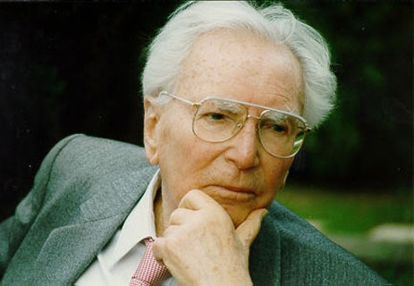

VIKTOR E. FRANKL: Austria, Viena (nació el 26 de marzo de 1905, murió el 2 de septiembre de 1997). Fue catedrático de Neurología y Psiquiatría en la Universidad de Viena y de Logoterapia en la United States International University de California. Es el fundador de la logoterapia, denominada por algunos autores como la «tercera orientación vienesa de la psicoterapia», después del psicoanálisis y la psicología individual. Obtuvo cátedras en las universidades de Harvard y Stanford, así como en las de Dallas (Texas) y Pittsburg. El primer escrito publicado de Frankl aparece en 1924, en la Internationaler Zeitschrift für Psychoanalyse, gracias a la recomendación expresa de Sigmund Freud. Los 32 libros publicados por Frankl —entre ellos El hombre en busca del sentido último, también editado por Paidós— se han traducido a 26 idiomas, incluido el chino, el japonés y el coreano.
En sus giras de conferencias, Frankl recorrió los cinco continentes, invitado por más de doscientas universidades.
Bibliografía
ELISABETH S. LUKAS: (Austria, Viena, 12 de noviembre de 1942). Licenciada en Psicología por la Universidad de Viena, se doctoró en la misma en 1972. Al año siguiente marchó a Alemania, donde ejerció como psicoterapeuta y posterior mente dirigió el Instituto del Sur de Alemanaza de Logoterapia, hasta el año 2003, en el que regresó a Viena para dirigir el Instituto para la Formación de Logoterapeutas en Abile.
Todos sus libros, que son numerosos, se refieren a las técnicas de la logoterapia y como esta, puede ayudar en la vida y darle sentido. Sus libros han sido traducidos a numerosos idiomas, y ha sido conferenciante en gran cantidad de universidades por todo el mundo.